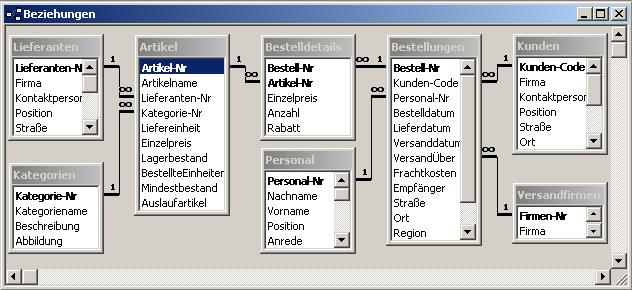

|
 Die Datenbank "Nordwind" enthält unter anderem die Tabellen
In der Ebene darunter werden die Firmen der einzelnen Bestellungen angezeigt. Bei Anklicken einer solchen Firma wird in einem modalen Dialog angezeigt:
|
CString CDb5Set::GetDefaultSQL()
{
return _T("[Bestellungen],[Personal],[Kunden]");
}
void CDb5View::OnInitialUpdate()
{
m_pSet = &GetDocument()->m_db5Set;
CRecordView::OnInitialUpdate();
GetParentFrame()->RecalcLayout();
ResizeParentToFit();
// Nach Bestelldatum sortieren
m_pSet->m_strSort = "[Bestellungen].[Bestelldatum]";
// Um zu verhindern, dass die Datenbank einfach jeden Datensatz mit jedem
// verknüpft (Natural Join), müssen die Verknüpfungen ausgewählt werden,
// die einen Sinn ergeben
m_pSet->m_strFilter = "[Bestellungen].[Personal-Nr]=[Personal].[Personal-Nr] AND [Bestellungen].[Kunden-Code]=[Kunden].[Kunden-Code]";
// Erneutes Laden der Tabellen, um die Sortierung und den Filter
// einzuschalten.
m_pSet->Requery();
CTime oldtime;
// Solange weitere Datensätze vorhanden
while (!m_pSet->IsEOF())
{
// Zum merken des aktullen Root-Items (Item oberster Ebene)
HTREEITEM parent;
// Nur wenn neues Root Item gebraucht wird
if (oldtime != m_pSet->m_Bestelldatum)
{
// Neues merken
oldtime = m_pSet->m_Bestelldatum;
// Neues anlegen
parent = m_tree.InsertItem(m_pSet->m_Bestelldatum.Format("%d.%m.%y"));
}
// Firmenname als Unterelement des aktuellen parent einfügen
HTREEITEM item = m_tree.InsertItem(m_pSet->m_Firma,parent);
// Merken der eindeutigen Bestellnummer beim Item
// damit es später beim Klick Event leichter wieder identifiziert werden kann
m_tree.SetItemData(item,m_pSet->m_BestellNummer);
// Zum nächsten Datensatz springen
m_pSet->MoveNext();
}
}
// db5View.cpp : Implementierung der Klasse CDb5View // #include "stdafx.h" #include "db5.h" #include "db5Set.h" #include "db5Doc.h" #include "db5View.h" #include "Dialog.h"
void CDb5View::OnSelchangedTree1(NMHDR* pNMHDR, LRESULT* pResult)
{
NM_TREEVIEW* pNMTreeView = (NM_TREEVIEW*)pNMHDR;
if (pNMTreeView != NULL)
{
if (pNMTreeView->itemNew.lParam != NULL)
{
// Um Bestellung zu finden
m_pSet->m_strFilter.Format("[Bestellungen].[Bestell-Nr] = %d", pNMTreeView->itemNew.lParam);
// Um jedes mit jedem Verknüpfung zu verhindern
m_pSet->m_strFilter += " AND [Bestellungen].[Personal-Nr]=[Personal].[Personal-Nr] AND [Bestellungen].[Kunden-Code]=[Kunden].[Kunden-Code]";
m_pSet->Requery();
Dialog dia;
dia.m_firma = m_pSet->m_Firma;
dia.m_land = m_pSet->m_Kunde_Land;
dia.m_bestelldatum = m_pSet->m_Bestelldatum.Format("%d.%m.%y");
dia.m_vorname = m_pSet->m_Vorname;
dia.m_nachname = m_pSet->m_Nachname;
dia.DoModal();
}
}
*pResult = 0;
}